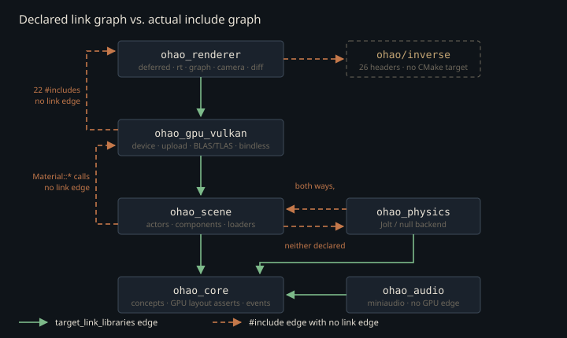

Monograph · Tree · ← Module hub · Module ownership map
architecture
Module ownership map
Which directory owns which concern; forbidden dependencies.
Two graphs, and only one of them is acyclic
There are two dependency graphs in this tree and they do not agree. The declared one — what `target_link_libraries` says — is a clean layering: core at the bottom, scene above it, GPU above that, render on top, physics and audio hanging off the side. The real one, the `#include` graph, has three cycles in it. Every executable in the repo admits this, the examples in a single line:
-Wl,--start-group ohao_renderer ohao_gpu_vulkan ohao_scene ohao_physics ohao_audio ohao_core -Wl,--end-groupexamples/CMakeLists.txt:18`--start-group` tells GNU ld to re-scan the enclosed archives repeatedly until no new undefined symbol appears. A left-to-right single pass — the default, and all a genuine DAG needs — would leave symbols unresolved here. That flag is not a build quirk; it is the load-bearing evidence for what this page is about.

Six archives, and a seventh directory that is not one
`ohao/CMakeLists.txt` adds exactly six subdirectories, and six archives come out — but not one target per directory:
add_subdirectory(render)ohao/CMakeLists.txt:4`ohao/gpu/` declares no library at all; its entire `CMakeLists.txt` is one `add_subdirectory(vulkan)` line, and `ohao_gpu_vulkan` is defined a level down. Two of the other five are conditional rather than literal: `ohao/core/` degrades to an `INTERFACE` library if its three `.cpp` files ever disappear, and `ohao/render/` omits the `STATIC` keyword, so `ohao_renderer`'s type follows `BUILD_SHARED_LIBS` — `OFF` in this configuration, hence static in practice.
`ohao_core` is the true leaf: zero includes of scene, gpu, render, physics, audio or Vulkan anywhere under `ohao/core/`. `ohao_audio` is the true peripheral — core, glm and miniaudio, plus `Threads::Threads`, `dl` and `m` on UNIX — with no scene or GPU header anywhere in it:
Threads::Threadsohao/audio/CMakeLists.txt:34Deleting it would leave the rest of `ohao/` untouched, which is not the same as free: every example names `ohao_audio` in the `--start-group` list above, the renderer smoke test links it, and `tests/audio/` exists only to exercise it.
Not every directory under `ohao/` is a link target. Research trees outside the public product face carry no `add_subdirectory` line, no target and no `.cpp` file — they are headers reached purely through the repo-wide `-I ohao` path, so their cost lands in the including translation unit and they never appear in the archive graph at all. The six libraries above are the whole link surface.
Cycle one: GPU calls up into render
`ohao_gpu_vulkan` links scene and core, never renderer. Yet 22 `#include` lines under `ohao/gpu/vulkan/` reach into `render/`, and the deepest of them sits in the renderer's own header. `VulkanRenderer` keeps its two RT profiles behind `std::unique_ptr`, which looks like insulation:
std::unique_ptr<RTRealtimeRenderer> m_rtRealtimeRenderer;ohao/gpu/vulkan/renderer.hpp:438It is not. `renderer.hpp` includes `rt_profile_renderer.hpp` to declare those types, and their shared base holds a `PathTracer` *by value*, so every `ohao_gpu_vulkan` translation unit that sees `renderer.hpp` instantiates a complete `PathTracer` layout:
PathTracer m_pathTracer;ohao/render/rt/rt_profile_renderer.hpp:195That is not a header-only relationship. `render_dispatch.cpp` calls `DeferredRenderer::setScene`, `setGeometryBuffers` and friends, whose definitions live in `libohao_renderer.a`. So `ohao_gpu_vulkan.a` carries undefined symbols that only `ohao_renderer.a` provides — while `ohao_renderer` is listed *first* on the link line. That is precisely the ordering a single pass cannot resolve, and exactly why the group exists.
Cycle two: scene and physics point at each other
`ohao_physics` declares core, glm and nlohmann_json — and, whenever the `Jolt` target exists as it does here, Jolt itself, which is where the module's actual mass is: its archive carries 102 undefined `JPH::` symbols.
target_link_libraries(ohao_physics PUBLIC Jolt)ohao/physics/CMakeLists.txt:24What it does not declare is scene. But `PhysicsComponent` derives from scene's `Component`, and `physics_component.cpp` pulls in the model loader's header outright:
#include "scene/asset/model.hpp"ohao/physics/components/physics_component.cpp:16The reverse edge is just as real, though not by the mechanism the name `ComponentFactory` suggests: there is no name-keyed component registry anywhere in this tree. The factory applies a `ComponentPack` — a variadic template over component *types* — that lists `PhysicsComponent` among its parameters, then fetches the instance with `getComponent<PhysicsComponent>()` and configures it:
using StandardObjectPack = ComponentPack<MeshComponent, MaterialComponent, PhysicsComponent>;ohao/scene/component/component_pack.hpp:83So scene compiles against physics headers and calls into `libohao_physics.a`:
#include "physics/components/physics_component.hpp"ohao/scene/component/component_factory.hpp:5The scene archive carries undefined `PhysicsComponent::createBoxShape`, `setRigidBodyType`, `setPhysicsWorld` and the constructor itself.
Neither target declares the other. This cycle leaves a fingerprint in the build files that is easy to misread: `ohao_physics` adds Vulkan's include directory while linking no Vulkan library and containing not one `Vk` type or `vk` call of its own.
${Vulkan_INCLUDE_DIRS}ohao/physics/CMakeLists.txt:9The reason is `scene/asset/model.hpp`, which physics includes and which drags in `<vulkan/vulkan_core.h>`. On this machine the line is inert — CMake resolved `Vulkan_INCLUDE_DIR` to `/usr/include`, a directory the compiler searches anyway — so it records the dependency rather than enabling it. Move the SDK elsewhere and it starts carrying weight. Either way it points at the invariant this page exists to correct.
The only Vulkan scene owns is a vertex layout
Other pages in this monograph state the rule "scene must not include vulkan.h". Two files under `ohao/scene/` violate it — `asset/model.hpp` and the `.cpp` beside it — and only the header propagates, so it is the one worth stating precisely:
#include <vulkan/vulkan_core.h>ohao/scene/asset/model.hpp:13`Vertex` declares its own binding and attribute descriptions as static members, so the vertex input layout — a pipeline object — is authored by the module that owns the vertex struct rather than by the module that builds pipelines. Across all of `ohao/scene/` that costs six mentions of a `Vk*` type and zero calls to any `vk*` entry point: the loaders, the actor tree and the component system genuinely are Vulkan-free. That is a statement about ownership, not about linkage — `ohao_scene` puts `${Vulkan_LIBRARIES}` in its `PUBLIC` link list unconditionally, called or not.
${Vulkan_LIBRARIES}ohao/scene/CMakeLists.txt:21The alternative — describing the vertex layout in a GPU-side translation unit and keeping scene header-clean — was not taken. What it buys is that the `offsetof` assertions on `Vertex` sit next to the fields they guard, so reordering one of them breaks the build in the file where the mistake was made rather than in a distant pipeline TU. What it does not buy is coverage: only `position`, `color` and `normal` are asserted, and `Vertex` never goes through `OHAO_ASSERT_GPU_LAYOUT`, so there is no size assert behind them either. Reordering `texCoord1`, `tangent`, `boneIndices` or `boneWeights` compiles silently.
Cycle three: the GPU header that is not Vulkan, and still links
The mirror-image surprise sits one directory over. `ohao/gpu/vulkan/material.hpp` lives in the Vulkan directory and contains no Vulkan whatsoever — glm vectors, `std::string` texture paths and an enum of presets:
struct Material {ohao/gpu/vulkan/material.hpp:11So `scene/component/material_component.hpp` can include a `gpu/vulkan/` path and stay Vulkan-free: `Material` is a Vulkan-free *type*. It is not a Vulkan-free *symbol*. The six texture setters, `applyPreset` and `hasTextures` are declared in that header and defined out of line in `material.cpp`, so `material_component.cpp` calling them leaves eight undefined `ohao::Material::*` in the scene archive that only `libohao_gpu_vulkan.a` defines.
material.setAlbedoTexture(std::string(path));ohao/scene/component/material_component.cpp:33That closes the third cycle, and it fails a single link pass the same way cycle one does: `ohao_gpu_vulkan` links `ohao_scene` `PUBLIC` and precedes it on the command line, so the archive that defines those symbols is scanned before the archive that needs them. Directory name is not ownership in this tree — one scene header is Vulkan-tainted, one GPU header is not, and the clean-looking one still makes an archive edge.
The ABI belongs to no module at all
Given three cycles, what stops this from collapsing into "everything includes everything"? Not the directory layout. It is that the byte layout of anything crossing to a shader is a contract checked at compile time in every TU that sees the header. `ohao_core` owns the check:
#define OHAO_ASSERT_GPU_LAYOUT(Type, Bytes) \ohao/core/concepts.hpp:84It does not own the numbers. Those are constants in `ohao/gpu/layout_meta.hpp`, deliberately separated from the renderer so a module can assert against the GPU ABI without including `renderer.hpp`: 240 bytes of object push constants, 128 for `LightData`, 80 for `GPULight`, 256 for the path tracer's push block, 48 for one material row.
static_assert(MaterialGpuPack::kBytes == 48, "material pack is 3 * 16 bytes");ohao/gpu/layout_meta.hpp:56And that header belongs to no archive. `ohao/gpu/CMakeLists.txt` declares no target, and `ohao_gpu_vulkan`'s recursive glob is rooted at `ohao/gpu/vulkan/`, so nothing sitting directly in `ohao/gpu/` is a source of anything:
file(GLOB_RECURSE GPU_VK_HEADERS "${CMAKE_CURRENT_SOURCE_DIR}/*.hpp" "${CMAKE_CURRENT_SOURCE_DIR}/*.h")ohao/gpu/vulkan/CMakeLists.txt:1`layout_meta.hpp` reaches its five consumers the same way `ohao/inverse/` does — purely through the repo-wide `-I ohao` path. That is the real ownership boundary, and it is not a module. `GPULight` is declared in `render/rt/` and written by `gpu/vulkan/light_upload.cpp`; neither module owns it — the 80-byte constant does, and both fail to compile if it drifts.
Private macros are where the boundary actually bites
A macro defined `PRIVATE` on one target is invisible to the other. Combined with the GPU-includes-render cycle, that asymmetry becomes an ODR hazard rather than a convenience. `OHAO_NRD_ENABLED` is private to `ohao_renderer`, but `path_tracer.hpp` reaches `ohao_gpu_vulkan` twice over — `renderer.hpp` includes it directly, and again through the by-value `PathTracer` inside `rt_profile_renderer.hpp`. If the header wrapped its denoiser members in `#ifdef`, the two archives would compile two different `PathTracer` layouts and the link group would happily join them:
// OHAO_NRD_ENABLED macro is PRIVATE to ohao_renderer, so conditionalohao/render/rt/path_tracer.hpp:40The fix there was unconditional forward declarations. `OHAO_DLSS_ENABLED` took the opposite one — it is defined on `ohao_gpu_vulkan` too — but layout parity is only the second of its two reasons. The first is that the macro is live code in that library: `device_setup.cpp` gates a `VK_KHR_get_physical_device_properties2` push at instance creation and an NGX extension block at device creation on it.
// DLSS-RR (NGX RayReconstruction) device extensions. VK_KHR_buffer_device_addressohao/gpu/vulkan/device_setup.cpp:152No NGX headers and no NGX link are needed for that — those are plain Vulkan extension-name macros, and the NGX calls themselves stay in `ohao_renderer`.
target_compile_definitions(ohao_gpu_vulkan PRIVATE OHAO_DLSS_ENABLED)ohao/gpu/vulkan/CMakeLists.txt:31The cheapest way to break this engine silently is to add an `#ifdef`-guarded data member to a header that both `ohao_gpu_vulkan` and `ohao_renderer` include. It compiles. It links — the archive re-scan cannot detect a layout mismatch. It corrupts member offsets at runtime.
shaders/ is a build target, not a module
`shaders/` owns no library and no include relationship with C++; it is a custom target that flattens each source path into one SPIR-V file, mangling the directory separator into an underscore, so `shaders/rt/pt_raygen.rgen` becomes `rt_pt_raygen.rgen.spv`:
string(REPLACE "/" "_" SHADER_FLAT_NAME ${SHADER_REL})shaders/CMakeLists.txt:42Two properties of that seam are worth knowing before editing a shader. First, the `DEPENDS` list that marks SPIR-V stale globs `includes/**/*.glsl`, and CMake's glob does not match `.glsl` files sitting *directly* in `shaders/includes/`:
"${CMAKE_CURRENT_SOURCE_DIR}/includes/**/*.glsl"shaders/CMakeLists.txt:32Exactly two files live at that level — `noise.glsl` and `pbr_unpack.glsl` — and the second is included by all three path-tracer raygen variants: `pt_raygen.rgen`, `pt_raygen_realtime.rgen` and `pt_raygen_offline.rgen`. The tree's other two `.rgen` files, `rt_gi` and `rt_shadow`, never touch it. Editing the material unpack marks nothing stale; you must touch one of those three raygens or delete the `.spv`.
Second, there are two independent answers to "where are the SPIR-V files". Raster passes probe a candidate list at `VulkanRenderer` construction, using `core_forward.vert.spv` as the sentinel and then broadcasting the winner to `RenderPassBase`:
std::ifstream test(path + "core_forward.vert.spv");ohao/gpu/vulkan/renderer.cpp:75The RT pipeline ignores that result entirely — `PathTracerShaderSet` hardcodes relative `bin/shaders/` paths, and `RTRealtimeRenderer` / `RTOfflineRenderer` pass their own hardcoded variants:
const char* raygenSpv{"bin/shaders/rt_pt_raygen.rgen.spv"};ohao/render/rt/path_tracer.hpp:55So the path tracer's shader lookup is working-directory sensitive in a way the raster path is not, and the two can disagree about which build's SPIR-V they loaded.
Contracts
- The archive list must stay inside `-Wl,--start-group`/`--end-group`. All three cycles (gpu ↔ render, scene ↔ physics, scene ↔ gpu) need the re-scan; removing the group breaks the link, not the design.
- Any struct crossing to a shader asserts its size via `OHAO_ASSERT_GPU_LAYOUT` against a constant in `gpu/layout_meta.hpp`. Adding a field without updating both is a compile error by construction — keep it that way. `Vertex` is the standing exception: three field offsets asserted, no size assert, five fields unguarded.
- No `#ifdef`-guarded data member may appear in a header included by both `ohao_gpu_vulkan` and `ohao_renderer`. Forward-declare, or define the macro on both targets.
- `ohao/scene/` may name `Vk*` types (vertex input descriptions only) but must not call any `vk*` entry point. This is an ownership rule, not a linkage one — `ohao_scene` links `${Vulkan_LIBRARIES}` either way.
- Editing a `.glsl` directly under `shaders/includes/` does not trigger shader recompilation. Touch a consuming stage or clean `build/shaders/`.
Source files
examples/CMakeLists.txtohao/CMakeLists.txtohao/audio/CMakeLists.txtohao/gpu/vulkan/renderer.hppohao/render/rt/rt_profile_renderer.hppohao/physics/CMakeLists.txtohao/physics/components/physics_component.cppohao/scene/component/component_pack.hppohao/scene/component/component_factory.hppohao/scene/asset/model.hppohao/scene/CMakeLists.txtohao/gpu/vulkan/material.hppohao/scene/component/material_component.cppohao/core/concepts.hppohao/gpu/layout_meta.hppohao/gpu/vulkan/CMakeLists.txtohao/render/rt/path_tracer.hppohao/gpu/vulkan/device_setup.cppshaders/CMakeLists.txtohao/gpu/vulkan/renderer.cppParent hub for the full pipeline narrative; this page is the file-level design unit. Sitemap · hover glossary terms anywhere.